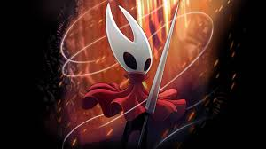

Hollow Knight: Silksong is the highly anticipated sequel of Hollow Knight. Its a game which combines togheter the Souls-like genre with the metroidvania one. Here we play as Hornet , a demigod spider who was captured and brought forcefully to a new kingdom called Parloom . With some divine intervention, Our protagonist breaks out of her captivity and starts looking for answers to understand why she was brought to this decaying kingdom. The game was developed by the 5 man indie team that goes by the name of Team Cherry . The team is made up by: Ari Gibson , William Pellen , Jack Vine , Leth Griffin , Christopher Larkin . There are so many great thing to say about this game. Firstly, the game area is HUGE, with 29 distinct areas. Secondly, The art direction is simplistic in nature yet charming, blending perfectly the bug characters with a dark medieval style.Additionally, The gameplay loop is very challenging with its many platform challenges and bosses, but its always rewarding when completing them. Lastly, if you love symphonic orchestral scores, you might just like the OST from this game. So give it a listen if you're curious! In my personal opinion, this game has no significant flaw in its design and I really hope that it gets nominated for game of the year!